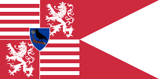
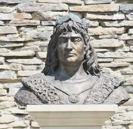

Hunyadi Mátyás élete és uralkodása Származása és ifjúkora: 1443. február 23-án született Kolozsváron, Hunyadi János kormányzó és Szilágyi Erzsébet gyermekeként. Kiváló nevelést kapott, tanult latinul, és jártas volt az államigazgatásban, amit bátyja, László kivégzése után a fogságban (Bécs, Prága) is továbbfejlesztett. Trónra lépése: 1458. január 24-én, 15 évesen választották királlyá a budai várban. Az országot a Hunyadi-párt és a köznemesség támogatásával, valamint Szilágyi Mihály segítségével vette át, a "király nélküli" időszakot lezárva. Uralkodása és a „fekete sereg”: Mátyás erős királyi hatalmat épített ki, csökkentve a főurak befolyását. Létrehozta a híres, állandó zsoldoshadsereget, a Fekete Sereget, amellyel jelentős sikereket ért el a török ellen, és terjeszkedett a cseh és osztrák területeken. Kulturális élet: Mátyás király udvara a reneszánsz kultúra központja volt. Felesége, Aragóniai Beatrix révén szoros kapcsolatot ápolt az olasz művészettel. Könyvtára, a Bibliotheca Corviniana, a kor egyik legnagyobb gyűjteménye volt. Halála: 1490. április 6-án hunyt el Bécsben. Igazságos Mátyás: A népmesékben élő "Igazságos Mátyás" kép a történeti kutatások szerint a törvénytisztelő, a kisnemeseket és jobbágyokat a főurakkal szemben oltalmazó uralkodó alakjából ered.
Családja
Szülők: Hunyadi János erdélyi vajda és Szilágyi Erzsébet. Testvér: Hunyadi László (kivégezték 1457-ben). Feleségek:
Podjebrád Katalin (1463–1464): Podjebrád György cseh király leánya, gyermekágyi lázban, fiúgyermekkel együtt fiatalon meghalt.
Aragóniai Beatrix (1476–1490): I. Ferdinánd nápolyi király lánya. Bár házasságukból nem született gyermek, a humanista műveltség elterjesztésében nagy szerepe volt.
Gyermek: Corvin János (1473–1504): Edelpeck Borbála boroszlói polgárleánytól született törvénytelen fiú, akit Mátyás elismert és trónörökösnek szánt
Hatása a kor kultúrájára
Mátyás hatása a kor kultúrájára az alábbi főbb területeken mutatkozott meg: A reneszánsz kultúra meghonosítása: Aragóniai Beatrixszel kötött házassága (1476) után számos itáliai művész, építész és tudós érkezett a magyar udvarba, amely így az európai reneszánsz egyik központjává vált. A budai és visegrádi palota fejlesztése: Mátyás óriási hangsúlyt fektetett a reprezentációra. Palotái európai hírű, fényűző épületekké váltak, a korabeli történetírók (pl. Antonio Bonfini) beszámolói szerint a reneszánsz művészet remekeivel. A Bibliotheca Corviniana: Mátyás híres könyvtára, a Corviniana, a korszak egyik legnagyobb európai gyűjteménye volt, amely több ezer humanista kódexet tartalmazott, és jelentősen hozzájárult a tudás terjesztéséhez.
Katonai sikerei
Mátyás király (1458–1490) katonai sikerei elsősorban az általa
létrehozott állandó zsoldoshadseregnek, a Fekete seregnek köszönhetőek,
amely a kor színvonalának megfelelően fejlett, hatékony fegyveres erő volt
Név
Idő
Bécs elfoglalása
1485
Török elleni védelem
1479
Itáliai segítségnyújtás
1480
Kinizsi Pál és a Fekete sereg

Kinizsi Pál és a Fekete Sereg kapcsolata: Felemelkedés: Kinizsi a morvaországi hadjáratok során tűnt fel, és tehetségével gyorsan a Fekete sereg egyik vezetőjévé vált. A kenyérmezei hős: 1479-ben a kenyérmezei csatában aratott döntő győzelme a török felett a korszak egyik legnagyobb katonai sikere volt. Mátyás után: I. Mátyás halála (1490) után, mivel a kincstár üres volt, a zsoldosok fosztogatni kezdtek a Felvidéken. Kinizsi Pál, mint a királyi sereg vezetője, kénytelen volt katonai erővel megfékezni korábbi harcostársait. Hírnév: Kinizsi nemcsak hadvezérként, hanem a mondákban élő, emberfeletti erejű hős alakjaként is bevonult a magyar történelembe.
Emlékezete

Mátyás király emlékezetének főbb elemei: Igazságos Mátyás: A népmesékben és a köztudatban mint az egyszerű nép pártfogója él, aki álruhában járva igazságot tesz. Reneszánsz mecénás: Uralkodása alatt Buda a reneszánsz kultúra központjává vált, megalapította a híres Bibliotheca Corvinianát. Hadszervező: A Fekete Sereg révén erős, központosított államot hozott létre. Emlékezethelyek: A Wikipedia Mátyás király emlékezete kategória számos szobrot, intézményt és földrajzi nevet sorol fel, amelyek őrzik nevét, köztük a gömöri emlékhelyekkel.
 Hunyadi Mátyás élete és uralkodása
Hunyadi Mátyás élete és uralkodása